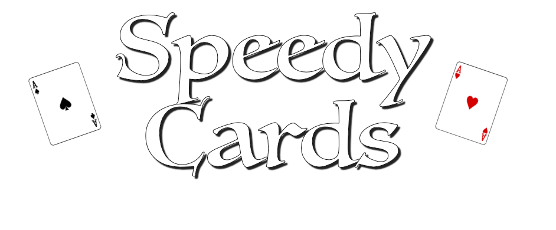
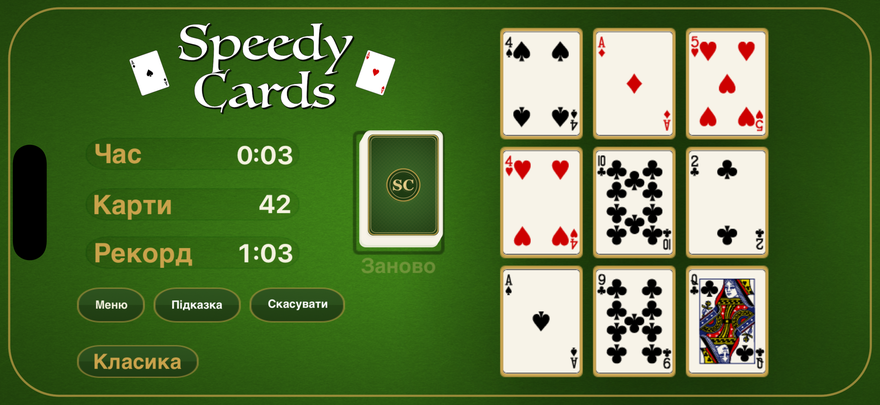
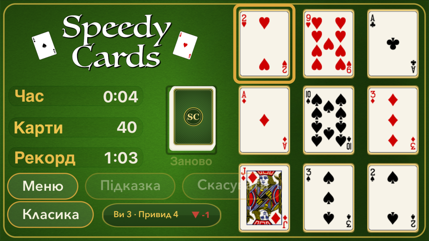
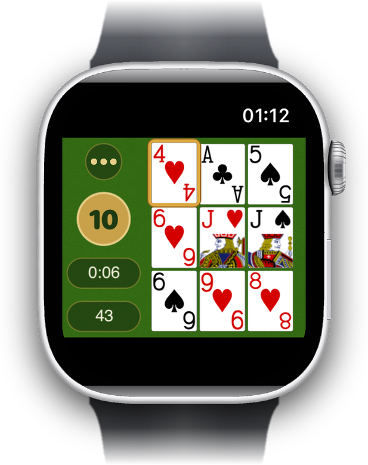
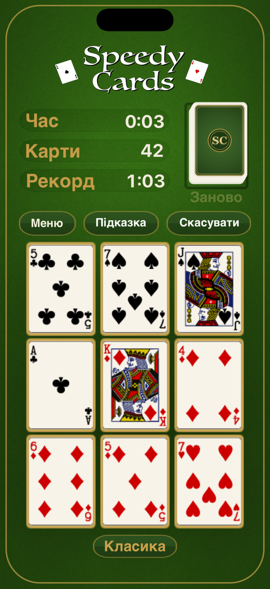

iPhone · iPad · Mac · Apple TV · Apple Watch
Думай швидко.
Грай швидше.
SpeedyCards — це швидка й елегантна карткова гонка в стилі пасьянсу для iPhone, iPad, Mac, Apple TV та Apple Watch. Прибирай поле, помічаючи комбінації — самотня 10, пара із сумою десять або Валет-Дама-Король. Кожне розчищення роздає нові карти, тож ти проходиш усю колоду настільки швидко, наскільки зможеш. Змагайся з годинником або з другом на однаковій роздачі.


Побачити комбінацію, розчистити колоду
Розчистіть стіл: самотня 10, дві карти, що дають десять, або Валет-Дама-Король. Кожне розчищення роздає нові карти з колоди, тож що швидше ви їх помічаєте, то швидше вона порожніє.
Три комбінації, один погляд
Десятка сама по собі, дві карти на десять, або три фігури разом. Це всі правила, і думати про них більше не доведеться.
Кожне розчищення роздає ще
Самотня десятка роздає одну карту, пара — дві, трійка фігур — три; розчищення живить стіл і проводить вас униз крізь колоду.
Змагайтеся з ким завгодно
З годинником, з денним розкладом або з другом на тому самому тасуванні.
Те саме тасування для обох
У дуелі обом гравцям випадають однакові карти — різниця лише в тому, що ви побачили і як швидко. Надішліть посилання чи короткий код будь-яким месенджером і позмагайтеся з тінню суперника.
Ні облікового запису, ні реєстрації, ні нашого сервера посередині — виклик і є кодом.
Причина повернутися
Один денний розклад на весь світ
Щодня всі отримують той самий стіл. Серії тривають, а на день, коли життя втручається, можна заробити заморожування.
Щотижневий Gauntlet
Турнір у Game Center, щотижня.
Латунний альбом на тридцять віх
П’ять столів, здобуті грою, а не куплені — із рангом столу, що зростає щоразу, у виграші чи програші.
Повноцінна гра на зап’ястку
SpeedyCards на Apple Watch — не пульт, а вся гра, створена для швидкого погляду. Поле займає весь екран, кожен хід м’яко торкається зап’ястка, і грати можна без iPhone поруч.

Безкоштовно для початку
«Класика» і «Виклик дня» на годиннику безкоштовні. Кожен інший режим дає три безкоштовні партії; Apple Watch Edition або SpeedyCards Pro відкриває всі.
Створено для зап’ястка
Поле на весь екран, великі числа й одна кругла кнопка для всього іншого.
Відчувайте кожен хід
Різний відгук для вибору, зачищення, хибної карти та перемоги — можна грати без звуку.
Smart Stack і Always-On
Віджет «Виклик дня» для Smart Stack і поле, що темніє, коли ви опускаєте зап’ясток.
П’ять платформ, одна гра
Одна гра на кожному пристрої Apple. Pro купується один раз для iPhone, iPad і Apple Watch разом; Mac та Apple TV — окремі застосунки зі своєю покупкою. Серії й прогрес ідуть за вами через ваш iCloud, який ми не можемо читати.

Стіл — де б ви не були
Вертикально на телефоні, горизонтально на Mac, через кімнату на телевізорі й одним поглядом на годиннику. Той самий розклад, ті самі правила, той самий підхід до вашого рекорду.
Для гравців
Без реклами. Без стеження. Без облікових записів. Нічого не збирається, нічого не продається, і немає рекламного SDK, який би вас бачив. Game Center необов’язковий і належить Apple. Усе — одноразові покупки, тут ніщо не поновлюється.
Гра говорить одинадцятьма мовами: українською, англійською, німецькою, французькою, іспанською, італійською, португальською, японською, корейською, грецькою та російською.
SpeedyCards
Безкоштовна гра. Одна покупка відкриває iPhone, iPad і Apple Watch; Mac та Apple TV — окремі застосунки, кожен зі своєю покупкою. Одинадцять мов, без облікового запису.